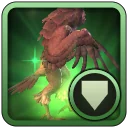
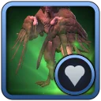
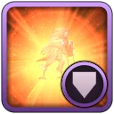

Commander
Vey the Pactbinder
Vey the Pactbinder, the support commander, with the Thrall Binder and Golem Caller builds.
A soft-spoken broker of infernal contracts. Vey never lifts a blade herself: her pact-servants fight for her while she mends her crew with her own blood.
Vey the Pactbinder is one of the 4 commanders. A commander fights on your board beside your units, grows with your player level and is shaped by the build and talents you choose.
Stats by player level
Vey has no star rank. Each fight uses the row for your current player level, so buying experience makes the commander stronger as well as widening your board. Commanders are offered at round 10, so the first row only matters if your level is still low by then. What each number means is on the stat reference.
| Player level | Health | Armour |
|---|---|---|
| 1 to 5 | 1,500 | 2 |
| 6 | 1,875 | 3 |
| 7 | 2,250 | 3 |
| 8 | 2,625 | 3 |
| 9 | 3,000 | 4 |
| 10 | 3,375 | 4 |
At every level
- Attacks
- Does not attack (Pact Retinue)
- Magic resistance
- 0%
- Move speed
- 275
A commander has no mana bar. Its active abilities run on cooldowns instead, as Mana and casting explains.
Passive ability
Vey has this ability whichever build you take.

Pact Retinue
In the game's words: "Vey never fights with her own hands. At the start of combat she calls her retinue, a Pact Archer and a Pact Bruiser, to fight beside her, and she regenerates 20 health per second."
- Cast
- Passive. It is never cast and works for the whole combat.
- The commander: cannot attack, +20 health regeneration per second.
- At the start of combat, the commander summons a Pact Archer at star 1 (levels 1 to 6), then 2 (levels 7 and 8), then 3 (levels 9 and 10) in the nearest free cell and summons a Pact Bruiser at star 1 (levels 1 to 6), then 2 (levels 7 and 8), then 3 (levels 9 and 10) in the nearest free cell.
Core ability
Whichever build you take, Vey also has this ability.

Blood Offering
In the game's words: "Vey spends 5% of her maximum health to heal every ally at once and grant them health regeneration and attack damage for 6 seconds."
- Cast
- Not cast with mana. It has a cooldown of 8 seconds, counted from the end of each cast, so with the cast point two casts are at least 8.4 seconds apart. The first cast starts 4 seconds into combat. The cooldown keeps running while the commander is stunned, but a stunned or silenced commander cannot start a cast.
- Cast point
- 0.4 seconds from the start of the cast to its effect.
- Targets
- All allies (the commander included).
- Deals pure damage to the commander equal to 5% of the commander's maximum health.
- Heals the targets for 61 (levels 1 to 5), then 75 / 90 / 135 / 150 / 180 (levels 6 to 10) health.
- Applies Blood Offering to the targets for 6 seconds: +8 (levels 1 to 5), then 12 / 15 / 22 / 25 / 30 (levels 6 to 10) health regeneration per second; +25 (levels 1 to 5), then 27 / 29 / 31 / 33 / 35 (levels 6 to 10) attack damage.
Talents
Each row opens when you reach that player level. You keep one option from each row for the rest of the match. These options are the same whichever build you take. A talent that belongs to one build is described under that build. See all talents.
| Player level | Option 1 | Option 2 |
|---|---|---|
| 4 |  Hardened HideThe commander: +300 maximum health. |  Second RetainerAt the start of combat, the commander summons a Pact Archer at star 1 (levels 1 to 6), then 2 (levels 7 and 8), then 3 (levels 9 and 10) in the nearest free cell. Second RetainerAt the start of combat, the commander summons a Pact Archer at star 1 (levels 1 to 6), then 2 (levels 7 and 8), then 3 (levels 9 and 10) in the nearest free cell. |
| 6 |  Deep OfferingBlood Offering becomes Deep Offering."Blood Offering heals 50% more and its blessing lasts 8 seconds." |  Infernal BoostEvery ally in the fight when combat begins, including the commander and the units the commander summons at the start of combat: +8% attack damage. Units summoned later in the fight do not get it.The damage bonus applies to attacks only, not to ability damage. Infernal BoostEvery ally in the fight when combat begins, including the commander and the units the commander summons at the start of combat: +8% attack damage. Units summoned later in the fight do not get it.The damage bonus applies to attacks only, not to ability damage. |
| 8 |  Searing TormentThe commander also casts Searing Torment. Searing TormentThe commander also casts Searing Torment. |  Pain WardThe commander: 15% less physical and magical damage taken, +20% magic resistance. |
| 10 | Set by the build. Thrall Binder:  Binding Mark Binding MarkGolem Caller:  Pit Colossus Pit Colossus |  Warded CrewEvery ally in the fight when combat begins, including the commander and the units the commander summons at the start of combat: +200 maximum health. Units summoned later in the fight do not get it. Warded CrewEvery ally in the fight when combat begins, including the commander and the units the commander summons at the start of combat: +200 maximum health. Units summoned later in the fight do not get it. |
Build: Thrall Binder
Healer who calls the kill
Heals the crew and marks the weakest enemy to take more damage.
Marks the weakest enemy for the whole crew to break.
Ability of this build

Thrall Mark
In the game's words: "Vey marks the weakest enemy for 6 seconds. The marked enemy loses 10 armour and takes 20% more damage from every source."
- Cast
- Not cast with mana. It has a cooldown of 10 seconds, counted from the end of each cast, so with the cast point two casts are at least 10.4 seconds apart. The first cast starts 10 seconds into combat. The cooldown keeps running while the commander is stunned, but a stunned or silenced commander cannot start a cast.
- Cast point
- 0.4 seconds from the start of the cast to its effect.
- Targets
- The enemy with the lowest share of health left.
- Applies Thrall Mark (-10 armour, 20% more physical and magical damage taken) to the target for 6 seconds.
Talent of this build
| Player level | Talent |
|---|---|
| 10 | Binding MarkThrall Mark becomes Binding Mark."Thrall Mark lasts 9 seconds, removes 15 armour and makes the target take 30% more damage." |
The other talent options are in the talent table above.
Build: Golem Caller
Healer with a stunning golem
Heals the crew and calls a Pit Golem that stuns nearby enemies.
Calls a Pit Golem that stuns on arrival.
Ability of this build

Pit Golem
In the game's words: "Vey calls a Pit Golem to her side. Its arrival stuns every enemy within 2 cells of her target for 2 seconds."
- Cast
- Not cast with mana. It has a cooldown of 15 seconds, counted from the end of each cast, so with the cast point two casts are at least 15.7 seconds apart. The first cast starts 15 seconds into combat. The cooldown keeps running while the commander is stunned, but a stunned or silenced commander cannot start a cast.
- Cast point
- 0.7 seconds from the start of the cast to its effect.
- Targets
- Its current target and all enemies within 2 cells of it.
- Applies Stunned (general) (cannot move, attack or cast) to the targets for 2 seconds.
- Summons a Pit Golem at star 1 (levels 1 to 6), then 2 (levels 7 and 8), then 3 (levels 9 and 10) in the nearest free cell.
Talent of this build
| Player level | Talent |
|---|---|
| 10 | Pit ColossusPit Golem becomes Pit Colossus."Pit Golem calls a stronger golem and stuns for 3 seconds." |
The other talent options are in the talent table above.
Comparing the builds
Vey has 2 builds. The build comes with the commander when it is offered and cannot be changed afterwards. The table shows what is different; the list under it shows what is the same whichever you have.
| Thrall Binder | Golem Caller | |
|---|---|---|
| In short | Healer who calls the kill | Healer with a stunning golem |
| Write-up | Marks the weakest enemy for the whole crew to break. | Calls a Pit Golem that stuns on arrival. |
| Abilities only this build has | Thrall Mark | Pit Golem |
| Talents only this build has | Binding Mark | Pit Colossus |
| Talent choices | 4 | 4 |
- Abilities in every build
- Pact RetinueBlood Offering
- Talents in every build
- Hardened HideSecond RetainerDeep OfferingInfernal BoostSearing TormentPain WardWarded Crew
How Vey plays in a match
These rules are the same for every commander, apart from where Vey stands and which items Vey may hold.
- Choosing. In the preparation phase of round 10 you are shown all 4 commanders. Each comes with one of its builds, drawn at random, and you pick one commander. That preparation phase lasts 10 seconds longer to give you time. If the fight starts before you have chosen, you are given the first commander shown, with the build it was offered with.
- On the board. Vey has a ranged reach, so the commander arrives in the back row, as near the centre as there is room. You may move it to any other cell of the board, but never to the bench, and it cannot be sold. It does not use up one of your unit places and it does not count toward any alliance. It can hold an item, with these exceptions. A commander has no mana bar, so it cannot hold the items that need a mana ability: Runescribed Quill, Cinder Core, Hourglass Prism, Renewal Orb, Archmage Codex. Vey counts as ranged, so it cannot hold the melee only item Sweeping Warblade.
- Levelling. The commander is always the same level as you, up to level 10. Its stats and the strength of its abilities are read from that level at the start of each fight. At player levels 4, 6, 8 and 10 you choose a talent during preparation. If several are waiting, they are offered lowest level first, and any you have not chosen when the fight starts is settled for you with the first option.
- When it falls. If Vey falls, the commander is out for the rest of that fight only and stands again, at full health, in the next round. Losing the commander costs you nothing beyond its help in the fight. A commander that is still standing when you win adds 1 to the damage your opponent takes, or 2 from round 31, whatever its level.
The full rules are on How commanders work.
Other commanders


Compare them all on the commanders page.